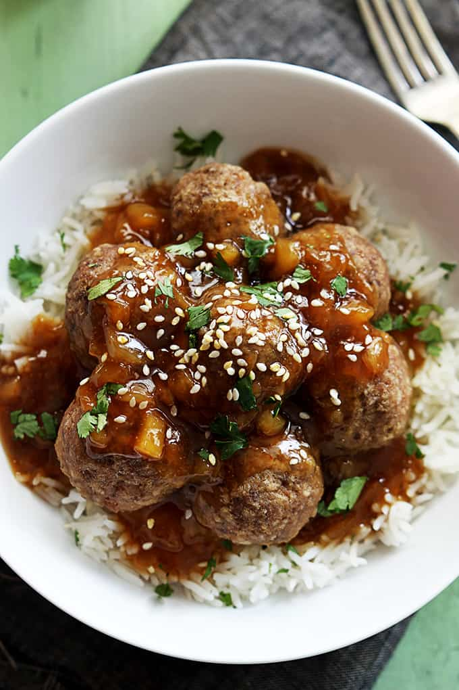

Hawaiian Meatballs
Home

Description
These juicy beef meatballs can be served over rice for a satisfying main dish.
Home cooks praise the sweet-and-sour pineapple sauce for its balanced flavor.
Recipes from allrecipes.com
Ingredients
- 1 pound ground beef
- 1/2 teaspoon ground ginger
- 1/4 teaspoon garlic powder
- 1/4 teaspoon ground black pepper
- 1 (8 ounce) can pineapple chunks, juice reserved
- 1/3 cup water, or as needed
- 1/4 cup brown sugar
- 2 tablespoons cornstarch
- 1/4 cup white vinegar
- 1 tablespoon soy sauce
- 1 green bell pepper, chopped
Steps
- Make the meatballs: Mix ground beef, ginger, garlic powder, and black pepper together in a large bowl until well combined. Shape into 1 1/2-inch balls.
- Saute meatballs in a large skillet over medium-high heat until browned, about 10 minutes.
- While the meatballs are cooking, prepare the sauce: Pour pineapple juice into a liquid measuring cup, and reserve pineapple chunks; add enough water to pineapple juice to make 1 cup. Mix brown sugar and cornstarch in a small bowl.
- Transfer meatballs to a plate, reserving the pan drippings. Add pineapple juice and brown sugar mixtures to the warm pan drippings. Stir in vinegar and soy sauce and bring to a boil. Cook until sauce thickens, 2 to 3 minutes.
- Return meatballs to the skillet; add pineapple chunks, and green pepper. Simmer until meatballs are no longer pink inside, about 10 minutes. An instant-read thermometer inserted into the center should read at least 160 degrees F (71 degrees C).